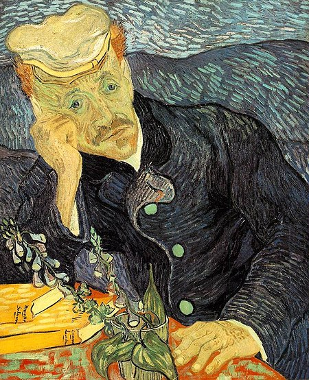
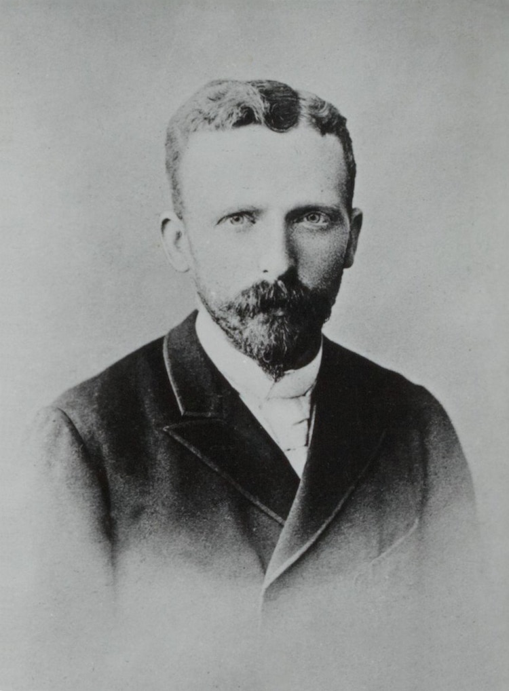
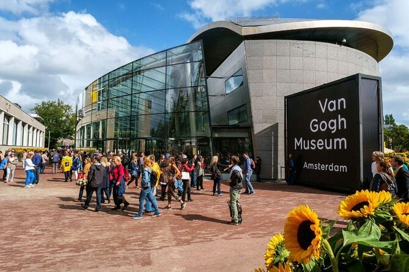
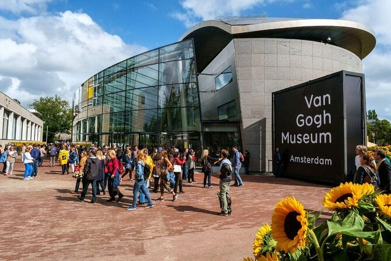

Vincent Willem van Gogh was a Dutch Post-Impressionist painter who posthumously became one of the most famous
and influential figures in Western art history In a decade,he created about 2,100 artworks,including around 860 oil
paintings, most of which date from the last two years of his life.They include landscapes, still lifes,portraits and
self-portraits,and are characterised by bold colours and dramatic,impulsive and expressive brushwork that contributed
to the foundations of modern art.Not commercially successful,he struggled with severe depression and poverty,eventually
leading to his suicide at age thirty-seven.
The story of Van Gogh
The Van Gogh Museum
 

The Van Gogh Museum is a Dutch art museum dedicated to the works of Vincent van Gogh and his contemporaries
in the Museum Square in Amsterdam South, close to the Stedelijk Museum, the Rijksmuseum, and the Concertgebouw.
The museum opened on 2 June 1973,and its buildings were designed by Gerrit Rietveld and Kisho Kurokawa.
The museum contains the largest collection of Van Gogh's paintings and drawings in the world.
In 2017,
the museum had 2.3 million visitors and was the most-visited museum in the Netherlands,and the 23rd-most-visited art museum in the world.
In 2019, the Van Gogh Museum launched the Meet Vincent Van Gogh Experience, a technology-driven "immersive exhibition" on Van Gogh's life and works, which has toured globally.
”Whoever loves much, performs much, and can accomplish much, and what is done in love is done well.”